Project Description
This Python game is a simple adventure game, developed as part of my Year 10 Term 3 Digital Solutions assignment, for which I received a 100% (20/20) grade.


Problem Description
We have been tasked to program a 2d game using the pygame library in python that satisfies users’ needs and preferences through conducting an informal interview.
Scope
The goal of this project is to develop a game using Pygame that explores and showcases gaming features such as level progression, enemies, and customization. The game will be designed based on insights gathered from an interview, focusing on implementing these key features effectively. Scalability and community viability are not required for this project, as the emphasis is on demonstrating core gameplay elements. The gaming industry has seen tremendous growth over the past few decades, evolving into a global business with approximately 3.32 billion daily users. The journey began with the creation of the first video game, "Tennis for Two," by William Higinbotham on October 18th, 1958. This project aims to contribute to this rich history by creating a game that reflects the ongoing importance of fundamental gaming mechanics.
Boundaries and Limitations
| Boundary | Limitation |
|---|---|
| Language: The game must be developed using Python and the Pygame library. | IT limitations: Our computers have hardware and software restrictions which limit our ability to create high quality games or use specific tools. |
| Coding experience: The potential of the game is limited to my current coding knowledge and concepts. | Time constraints: The project must be completed within a small timeframe which limits the game’s potential features. |
| The game must explore specific features: immersion, progression, social interaction, and surprise. | |
| The game should be appealing towards 15-year-olds. |
Survey Results
I decided to give survey participants the opportunity to construct ideas for their ideal game, incorporating all features they enjoy in gaming into one. These are the survey responses, simplified for analysis purposes.
| What camera should be used? | What style | What environment? | Combat mechanic? | Visual style | What makes a game engaging? |
|---|---|---|---|---|---|
| Top down | Base defence | Futuristic | Real time | Realistic | Achievements |
| Front on | Platformer | Post apocalyptic | Real time | Pixel-art | Replayability |
| Front on | Sandbox | Planet earth | Real time | Pixel-art | On the clock |
| Top down | Strategy | Space | Turn-based | Cartoon | Bosses |
Analysis of Results
According to the survey results, it is clear that the preferred gameplay/combat mechanic is real time fighting, displaying a preferability for dynamic, fast paced gameplay. Next, most responses wanted to play a game with pixel-art visuals. Specifically, all the people who preferred front-on games chose to have a pixel art style. Front on camera was selected twice, often used in platformer games or sandboxes where it might provide a more engaging experience. The environments provided by surveyors indicates two general themes: High tech, and grounded dystopian. The choices futuristic and space are more speculative and higher tech whereas planet earth and post-apocalyptic are more dystopian. It is clear in the table that elements of a game that extent its longevity and challenge are enjoyed. “Achievements” and Replayability” illustrates how players want to be able to return to a game and still enjoy it. “On the clock” indicates time-based challenges or speed-running, and “Bosses” are a feature that adds excitement and milestones to a game.
Avatar
- Name: Nick
- Age: 15
- Future Pathway: Considering engineering or pursing medicine
- BYO Device: Windows 11
- Interests: Gaming, coding
- Personality: Introvert, gamer
- Preferred Gaming Styles: Shooter, Movement based, Turn-based, Real time, FPS, Level progression
- What Makes a Game Enjoyable: Being on the clock, fast paced gameplay, intuitive movement
Review of Existing Game
60 seconds “A dark comedy atomic adventure of scavenge and survival.” (Gentleman, 2016). The game takes place in a town when a nuclear bomb is set to detonate and the themes are resource management, scavenging, survival, apocalypse. I am taking inspiration from this game and rather than using turn-based strategy mechanics, I will be using real time strategy and decision making.
Intended Game Concept
"Atomic Dawn " takes you to an interesting pixelated world where the fast reaction and intelligent use of resources contribute primarily. When you venture out into the vibrant world to explore, can you find the route to safety. Can you survive purely by scavenging canned beans and looking for water? Along the way, you will face various obstacles and intelligent enemies which challenge your platforming. At the end of the level, you are racing to get to an extraction point to escape the dangers around you. “Atomic Dawn” is an incredible survival experience packed with stylised graphics and fun gameplay that seeks to bring back some of the magic in what are often seen as just mundane side-scrollers. Will you collect all the resources, survive enemies and make it out alive?
UI Design
Showcase of key UI components:
- 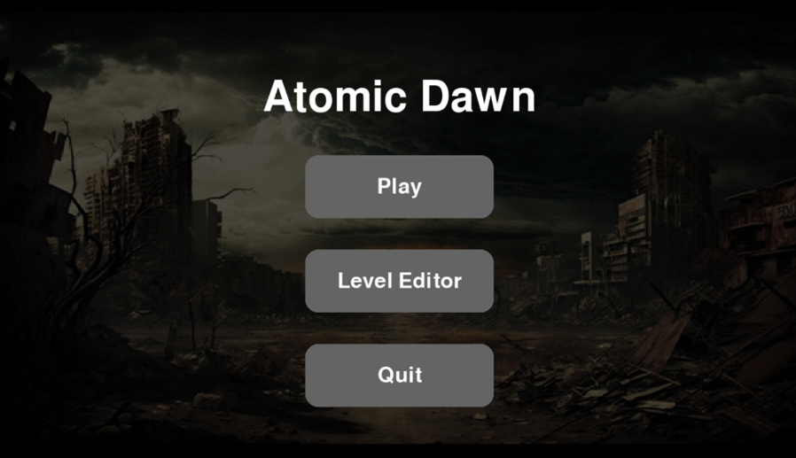 Title Screen
- 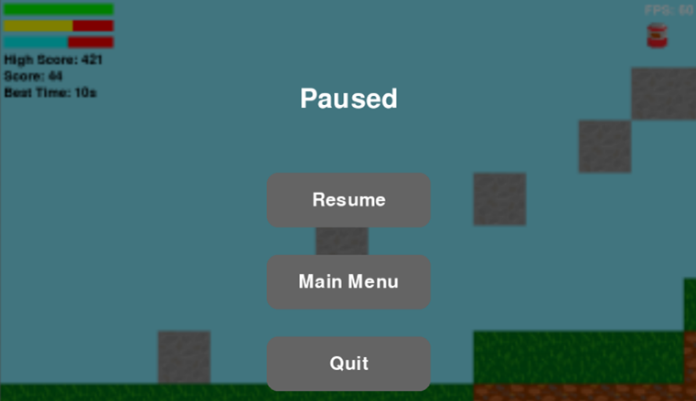 In-Game Pause Menu
- 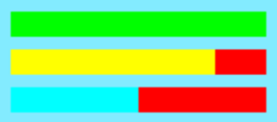 Health/Hunger/Thirst Bars
- 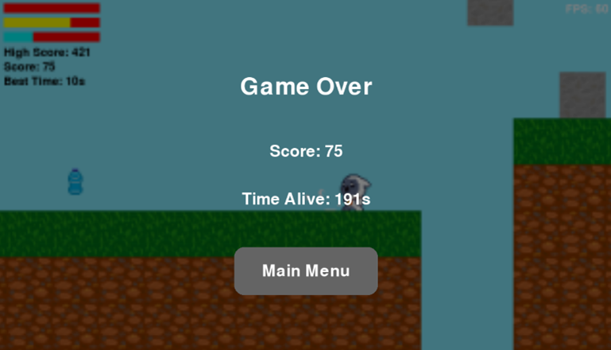 Game Over Screen
- 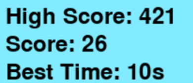 Live Game Statistics and Records
- 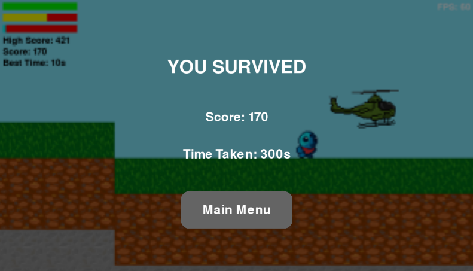 Victory Screen
- 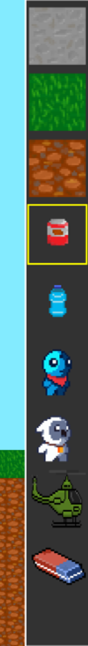 Level Editor Sidebar
Object/Asset Design
| Object Name | Static / Movable / Playable | Image | Description |
|---|---|---|---|
| Player | Playable | 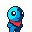 | The player is a simplistic 32x32 character with fluid, well-transitioned animations between idle, run, jump, and death. |
| Enemy | Moveable | 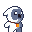 | The enemy is a simplistic 32x32 character with fluid, well-transitioned animations between idle, run, jump, and attack while running. |
| Item | Static | 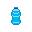 | The two items, food and water, are simplistic and vibrantly pop out. In-game, these move up and down on a sine wave to get the players attention and mark them as collectible. The beans also spin which adds to the vibe. |
| Block | Static | The three block types, grass, stone, and dirt, were hand-drawn for artistic purposes and fit the pixel art aesthetic of the game. They are sized perfectly for the grid-based level editor. | |
| Object | Static | 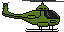 | The “object” is an asset that could use any texture but serves as the end of the level. The adaptability could mean players could have a helicopter, convoy, submarine, etc., to end their level. It would not be difficult for users to add this functionality to their own levels too. |
Student Review of the Game
| Student | Aspect | Review |
|---|---|---|
| Nick | Gameplay & Survival Mechanic | It’s a good game. I enjoy the gameplay mechanic of eating and drinking to stay alive. The AI are also pretty advanced, and it is a fun challenge. |
| Livv | Game Complexity & Design | The game is really exceptional and intricate, especially for the limitations of Pygame which highlight the true skill and effort put into coding it. |
| Darcy | AI & Level Editor | The AI are really good at their job, and it is impressive to see a successful level editor built into the program. |
| Ashton | Level Creation | I love how you can make your own maps and piece them together yourself so there is no need to make several maps by default. |
Recommended Changes for the Future
In the future, there could be a co-op mode, which utilizes online multiplayer. This would require teamwork skills and problem-solving to complete puzzles and continue with unique gameplay mechanics. Players would also need to sacrifice resources for each other, and it could allow for fun moments. Implementing online multiplayer would require a backend server to handle events and synchronisation while the front-end program displays the game correctly, tasks of which require extensive research and careful implementation. Next, an in-program level browser could be added that allowed users to upload their own maps with a name and thumbnail and access a wide range of other peoples in a repository would allow for incredible replayability as the user would never run out of content. Leaning into the sandbox side of this adventure game, there could be functions that allowed players to design their own character, enemies, blocks, and have them adaptively apply would be fantastic. The performance of this program varies from computer to computer so using hardware acceleration to speed up the efficiency or use of a different engine would allow more people to have access to the game (Chiradeep BasuMallick, 2024). Sound and music design can tell a story to players throughout the course of a game, immersing them in the experience, and providing them with audible feedback which is important to many people. This is why in the future, adding music and sound effects would be beneficial. Going into more detail, there could be different zones that have different themes such as eerie caves with mysterious ambience, luscious mountains with tranquil music, or even the dark depths with horror tracks. “It can help create an immersive atmosphere, reinforce the game's story and emotions, and improve game memory and recognition.” (figmatest, 2024). Adding a tutorial for the user would significantly increase the learnability of the level editor without needing to get external help. This is because specific controls are needed to save, load, select objects, and spawn them in which are not highlighted. A tutorial could be added to the main menu for users to be sure they won’t miss it.
Evaluation
Atomic Dawn was created after the influence of several students’ suggestions and the collaborative ideal game was established, matching a wide range of audiences tastes while still having unique aspects. Overall, the game development process went extremely well, with tens of hours soaked into the project and many tools being developed in the process that can be used in the future. This is the most advanced coding task I have taken up and it has certainly improved my ability to use python, json, file managing, sprite sheets, HUD elements, UI menus and interfaces, and find methods to achieve what I want to accomplish by finding online resources. The 2d pygame side-scroller survival sandbox that was developed was a success and it met the criteria of the task through having the following features. Firstly, due to the custom level editor, there are infinite possibilities for new experiences to be made, aligning with the scope of the task to include level progression. Next, through using algorithmic AI, the enemies of my game had high intelligence and spatial awareness without the requirement of resource intensive, high data caching for machine learning models, often high in disk size which is less than preferred when working with the already limited python ecosystem, as seen in the statement, “Python is widely used for machine learning but it can be slow and may need more memory compared to other languages such as C or C++” (What Are the Downsides of Using Python in a Machine Learning Project?, 2023). Customisation is one of the most important aspects of my game, allowing users to generate their own experiences and challenge their abilities, perfectly matching the scope of the project. After thorough reporting and review with other students, the feedback for Atomic Dawn is overwhelmingly positive and the future outlook of the game will only continue to expand.
Usability Principles
| Principle | Description |
|---|---|
| Effectiveness | The game was effective in its job to immerse the user with fluid animations, detailed textures, and adaptive HUD elements such as health, hunger, and thirst bars. The game incorporates progression through custom level design, letting people make their own stages. High scores are recorded, allowing players to compete with each other and themselves, offering a fun challenge. The game has a unique gameplay loop with its resource management, surprising players with challenges they must overcome. |
| Learnability | The gameplay mechanics are intuitive and simplistic, with a clear task and objective for the user, as the game is a side scroller with one direction of progression. While it may take time for the user to develop strategies to manage resources effectively, this is part of the fun. Although the game is easy to pick up and understand, the level editor would require a 10-second tutorial to learn its mechanics. |
| Safety | Throughout development, there were several errors in the code, but the final product is flawless and stable for players of any kind. It runs with no errors and will not crash unexpectedly. |
References
- Gentleman, R. (2016, September 22). 60 Seconds! Atomic Adventure. App Store. https://apps.apple.com/us/app/60-seconds-atomic-adventure/id1072395467
- BasuMallick, C. (2024, January 5). What is Hardware Acceleration? Working, Pros and Cons | Spiceworks. Spiceworks Inc; Spiceworks. https://www.spiceworks.com/tech/hardware/articles/what-is-hardware-acceleration/
- What are the downsides of using Python in a Machine Learning project? (2023). Linkedin.com. https://www.linkedin.com/advice/1/what-downsides-using-python-machine-learning-project
- figmatest. (2024, April 25). The importance of music in video games. TuneTailors. https://tunetailors.com/blogs/sound-stories/the-importance-of-music-in-video-games